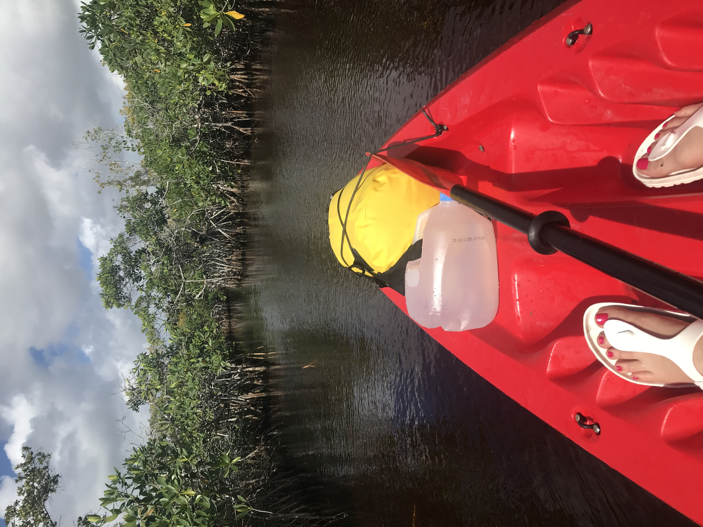
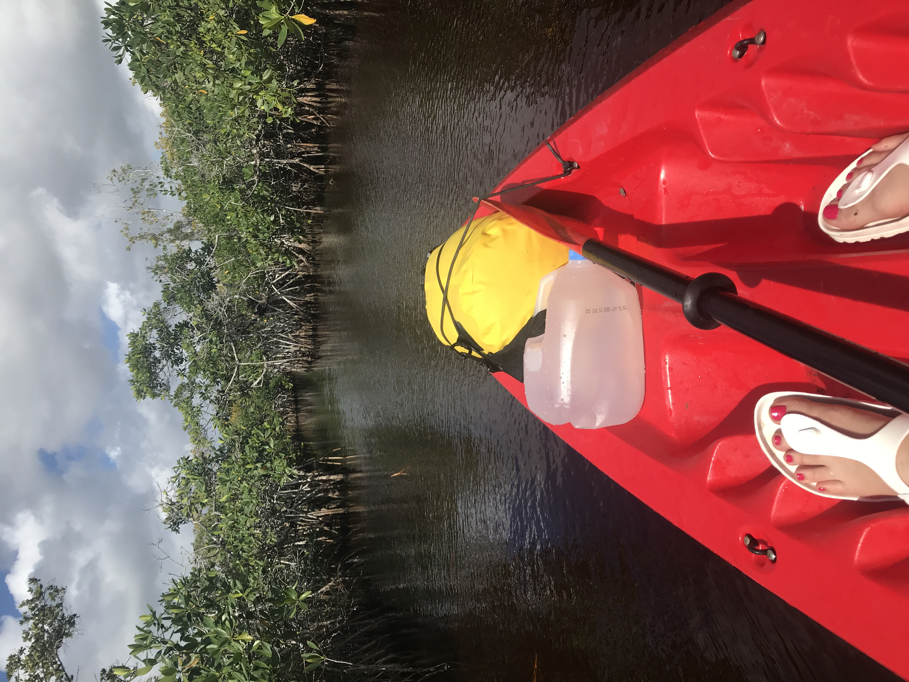
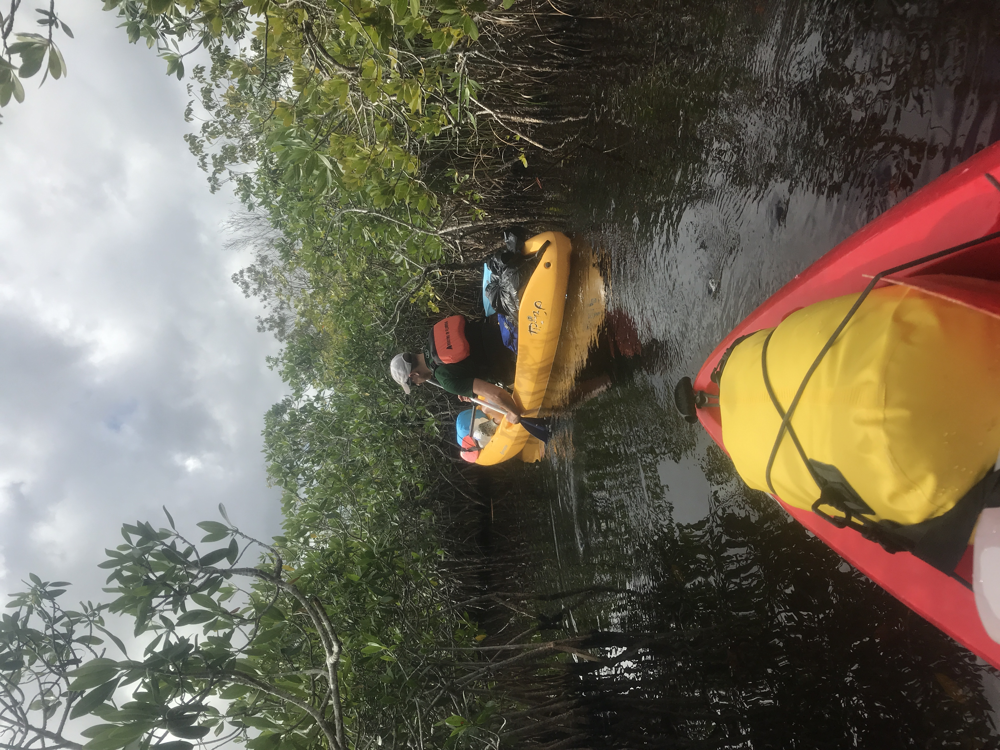
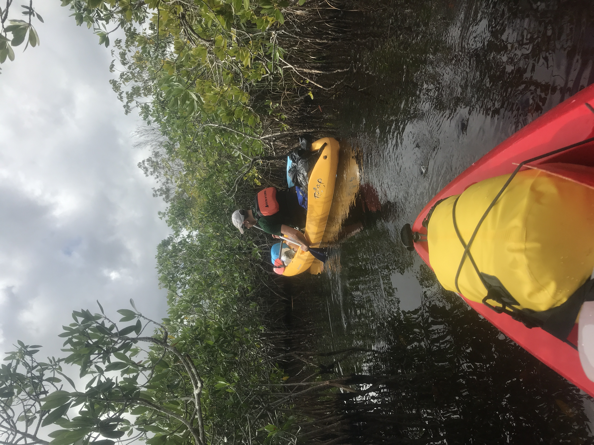

Distance
Distance Observed Wildlife
Observed Wildlifeto
The Everglades is best experienced on the water. Immersing ourselves in the mangrove swamps was a memory my parter and I will never forget. Navigating this maze and sleeping on a platform, with no solid ground for miles, was invigorating, to say the least.
My partner and I embraced our most adventurous sides for our first backcountry kayaking experience. We rented our kayak’s through Flamingo Adventures. I believe they are the only option for renting canoes and kayaks in this part of the Everglades. I had trouble using their website so I called to make the reservation. They were friendly, allowed me to change my reservation with no fee a week before the reservation, and it cost $215 for two 24-hour rentals with drop off and pick up. For being the only option, they were competent and I got what I needed when I needed it. We reserved the chickee with a park ranger at the Flamingo station for a small fee.

The previous night we camped at Flamingo Campground in the Everglades and launched our kayaks at 11:30AM. The a precarious launch was a small, barely visible opening in the persistent mangroves lining the road. Initially, it was slow rowing since the narrow width of the trail prevented us from using our kayak paddles. We instead used the provided canoe paddles for the first mile.
 


The experience was so cool! We were in a tunnel of red mangroves. To give a little context, the area was in shallow water, not sure how shallow since I had no interest submerging in the water. Mangroves are a species of plant whose seeds/pods initially float and eventually take root under the brackish water. Once the stalks emerge, they spread out horizontally as much as vertically. Shoots in their branches reach back to the soil used for added support. The result is a dense tangle of vegetation that appears to be land, but provides no solid footing.
 

Luckily this maze was marked by white poles emerging from the water. Each one is visible from the previous one, but we remained vigilant. Without the poles, we would still be out there, lost in the spiral. The experience reminded me of the Pirates of the Caribbean ride at Disney World.
After a mile or so, the path opened enough to use our kayak paddles and we moved more quickly. As amateur paddlers, we got a kick out of our mishaps miscalculating, getting the tips of our boat caught in a mangrove, and getting spun around. Three miles in, the trail opens up to bays increasing in size. The expansive water was a welcome relief as a change of scenery. We were able to go faster still and arrived at the Pearl Bay Chickee around 2:30PM after spotting it across the bay.

The chickee was two wooden platforms connected by a boardwalk, included a handicapped porta potty, and sat at the edge of the bay. We tied up our boats and set up our camp. We both overcame a period of uneasiness brought on by the consistent winds, being propped above opaque water, and the awareness of no solid land for three miles in any direction. We overcame this uneasiness and anxiety with a hot meal and some meditation, thanks Headspace (that sentence made it seem much simpler than it actually was).
Then we relaxed on our hammock, and read. When the sun approached the horizon, we set off on a short evening paddle. The sky provided a real show for us. Soon after the sunset, the full moon rose and it felt like twilight extended through the night. The moment the sun set, the mosquitos came out. We tried hiding in our hammock by closing it above us with our hands, but too many got through our imperfect barrier and we retreated to our tent. We fell asleep to the noise of millions of mosquitos providing a persistent hum.
We awoke and hung out in our hammock for a bit. We were told that if we had the will to paddle to the Hell’s Bay Chickee, there are dolphins that swim in and feed at sunrise. Further from the ocean, we didn’t experience this, but enjoyed the sunrise’s colors and the way they reflected off the flat bay. After some breakfast, hot beverages, and chickee yoga, we packed up and began the return paddle.
The return felt much quicker despite difficulty finding the bay’s exit. After paddling through open water we were eager to return to the fun maze of the mangroves. Along the way we spotted an eastern diamondback rattlesnake and I made use of my brand new monocular to properly identify it and see it swim away. We made it back to the launch at 12:30PM and were so glad to have solid ground beneath us once again.


We had left our rental car at the launch and were able to leave our kayaks to be picked up by Flamingo Adventures. On our way out of the Everglades we stopped at the Royal Palm Visiting Center. There was a whole host of wildlife along the short Anhinga Trail including plentiful alligators (you can get as close as you are comfortable), turtles, and lots of birds. After leaving the park, on the way to the airport, we stopped at the Robert Is Here Fruit Stand and slurped down a couple delicious smoothies. This Everglades adventure, contrasting so much with New England, was one we will always remember.